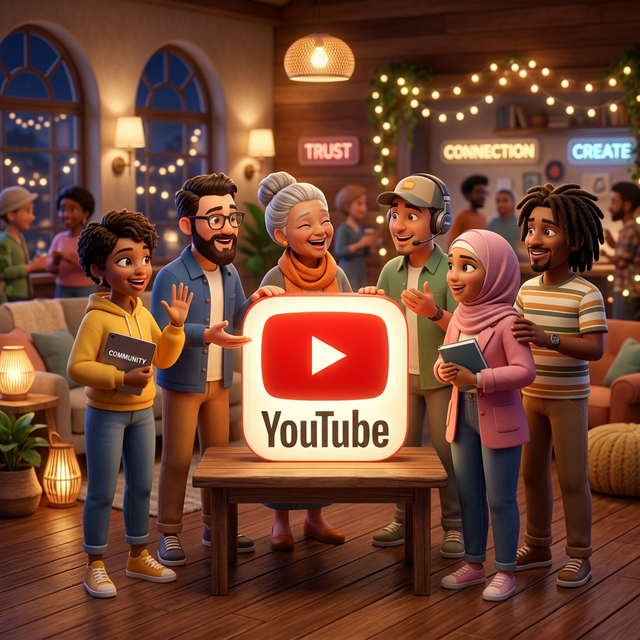

Building a Loyal Audience Through Links

In the bustling digital ecosystem of 2026, creators often obsess over vanity metrics: view counts, subscriber totals, and like ratios. While these numbers are important indicators of reach, they do not necessarily equate to loyalty. A viewer can watch a video, laugh at a joke, and never return. True loyalty—the kind that builds sustainable careers and communities—is forged in the spaces between content consumption. It is built in the direct connections you establish with your audience.
At the heart of these direct connections lies a humble but powerful tool: the link.
Most creators treat links as mere utilities—a way to sell a product or direct traffic to a sponsor. However, when used strategically, links become the bridges that transform passive viewers into active community members. They are the pathways that lead your audience from the ephemeral feed of a social platform into your owned ecosystem, where real relationships are built.
This guide explores the art and science of building a loyal audience through strategic link management. We will move beyond basic click-through rates to discuss how thoughtful linking strategies can deepen engagement, foster trust, and create a dedicated fanbase that sticks with you for the long haul.
The Problem with "Walled Gardens"
To understand the power of links, we must first acknowledge the limitation of modern social platforms. YouTube, Instagram, TikTok, and Facebook are "walled gardens." They are designed to keep users inside their apps for as long as possible. Their algorithms prioritize content that keeps people scrolling within their interface, not content that drives users away to external sites.
When you rely solely on these platforms, you are renting your audience, not owning it. Algorithm changes can wipe out your reach overnight. Account suspensions can erase your life's work. This is why the most successful creators of our time use links to migrate their audience from rented land to owned land—email lists, private communities, personal websites, and direct messaging channels.
The Golden Rule: Social media is for discovery; your owned channels (via links) are for retention and loyalty.
1. The Psychology of the Click: Trust Before Traffic
Before a user clicks a link, they make a split-second decision based on trust. Is this link safe? Is it relevant? Will it waste my time? If your linking strategy feels spammy or aggressive, you will repel the very people you are trying to attract.
Building loyalty starts with transparent intent. When you share a link, clearly articulate the value the user will receive on the other side. Instead of a vague "Click here," try "Get the free checklist I mentioned in the video" or "Join our private discussion about this topic."
Consistency is also key. If your links always lead to high-quality, relevant resources, your audience learns to trust them. Over time, the click itself becomes a habit. They stop questioning the destination and start anticipating the value. This psychological shift is the foundation of loyalty.
2. Deep Linking: Respecting the User Experience
Nothing kills loyalty faster than friction. Imagine a fan sees your tweet about a new video. They click the link on their phone, expecting to watch it immediately in the YouTube app. Instead, they are dumped into a mobile browser, forced to log in again, and bombarded with ads. That tiny moment of frustration creates a negative association with your brand.
Deep linking solves this problem. By using smart link technology (like that provided by OpeninYoutube), you can ensure that when a user clicks a link on a mobile device, it opens directly in the native app if it is installed.
- Seamless Transition: The user goes from social feed to content consumption in seconds.
- Higher Completion Rates: Smooth experiences lead to longer watch times.
- Respect for Time: It shows your audience that you value their time and convenience.
When you remove friction, you remove barriers to loyalty. Users are more likely to return to a creator who makes their life easier.
3. Creating a "Link Ecosystem" for Community
A single link in a bio is a start, but a link ecosystem builds a community. Instead of sending everyone to the same generic homepage, curate specific pathways for different segments of your audience.
The Resource Hub
Create a central hub (a landing page or a "Link in Bio" page) that serves as a library of your best work. Organize links by topic, series, or difficulty level. This transforms your links from simple redirects into a structured learning path. When users see that you have organized your content specifically for their benefit, they feel cared for.
The Exclusive Zone
Use links to gate exclusive content. This doesn't always mean paid content; it can be as simple as a Discord server, a Telegram channel, or a newsletter. "Click this link to join the inner circle" is a powerful call to action. It creates a sense of belonging. People are loyal to groups they feel part of. By using links to funnel your most engaged fans into a tighter community, you amplify their loyalty.
The Feedback Loop
Don't just push content out; use links to pull feedback in. Share links to surveys, polls, or Q&A forms. Ask your audience what they want to see next. When users click a link to vote on your next video topic and then see that video get made, they feel a sense of ownership. They aren't just watching; they are co-creating. This investment of effort creates deep, unbreakable loyalty.
4. Data-Driven Relationship Building
Loyalty is personal. To be personal, you need to know your audience. Generic links tell you nothing. Smart, tracked links tell a story.
By analyzing link data, you can learn:
- What topics resonate? If links to "Advanced Tutorials" get clicked twice as often as "Beginner Tips," you know where your core audience's interest lies.
- When are they active? Track click times to schedule your community engagements when your fans are most awake and receptive.
- Where do they hang out? See which platform drives the most engaged clicks. Is it Twitter? Instagram Stories? Focus your community-building efforts there.
Use this data to tailor your communication. If you know a segment of your audience loves behind-the-scenes content, send them a direct link to your latest vlog. Personalization makes users feel seen, and feeling seen is the essence of loyalty.
5. The Power of Branded Short Links
Trust is fragile. A long, messy URL filled with random characters looks suspicious. A clean, branded short link (e.g., yourname.com/community) looks professional and authoritative.
Branded links do more than look good; they reinforce your identity every time they are shared. If your fans share your link with their friends, your brand name is front and center. It turns every share into a mini-advertisement for your credibility. In a world of scams and clickbait, a recognizable domain is a badge of honor that says, "This is safe. This is me."
6. Nurturing the "Superfan"
Not all audience members are equal. The 1,000 True Fans theory suggests that you only need a small group of die-hard supporters to sustain a career. Links are the tool you use to identify and nurture these superfans.
Create a "VIP" link that you only share occasionally or with specific conditions. Maybe it's a link to an early access video, a special discount, or a handwritten note. Track who clicks these exclusive links. These are your superfans. Engage with them directly. Reply to their comments. Acknowledge their support. By using links to segment your audience, you can give your biggest fans the extra attention they crave, turning them into evangelists for your brand.
Actionable Strategy: The Welcome Sequence
When a new user clicks a link to join your newsletter or community, don't just say "Thanks." Set up an automated sequence of links that introduces them to your best content.
Email 1: Welcome + Your most popular video.
Email 2: Your personal story + A link to your "Start Here" page.
Email 3: An invitation to reply and say hello.
This guided journey transforms a cold click into a warm relationship.
7. Consistency and Reliability
Finally, loyalty is built on reliability. If you promise a link in your video description, make sure it works. If you say a sale ends on Friday, ensure the link redirects correctly after that date. Broken links are broken promises. They signal negligence and disrespect for the user's time.
Regularly audit your links. Use tools that allow you to update destinations without changing the URL. This ensures that even if you change your website structure or move platforms, your old links in previous videos still work. This commitment to maintaining the integrity of your digital footprint shows your audience that you are here for the long run.
Conclusion: From Clicks to Connections
Building a loyal audience is not about tricking the algorithm or chasing viral moments. It is about building genuine human connections in a digital world. Links are the threads that weave these connections together.
When you approach link management with empathy, strategy, and a focus on user experience, you stop treating your audience as metrics and start treating them as people. You guide them from the noise of social media into the clarity of your community. You respect their time with deep links, you earn their trust with branded URLs, and you deepen their engagement with curated ecosystems.
In the end, views may fluctuate, and trends will fade. But a loyal audience, built on the solid foundation of trust and valuable connections, is an asset that lasts forever. Start optimizing your links today, not just for clicks, but for the relationships that lie beyond them.
Want More Creator Tips?
Join thousands of creators who use OpeninYoutube to grow their channels.
Sign Up Now